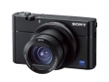

该相机具备1英寸Exmor RS CMOS影像传感器，配合蔡司Vario-Sonnar T* 24-70mm F1.8-2.8大光圈镜头可还原纤毫毕现的画质。相机采用相比上一代升级了BIONZ X影像处理器和前端LSI性能，高速自动对焦速度可达0.05秒，多达315个自动对焦点可覆盖影像区域约65%的范围。相机采用24张／秒高速连拍，在采用约2010万像素高分辨率模式下，支持在自动对焦／自动曝光模式中可连续拍摄233张。